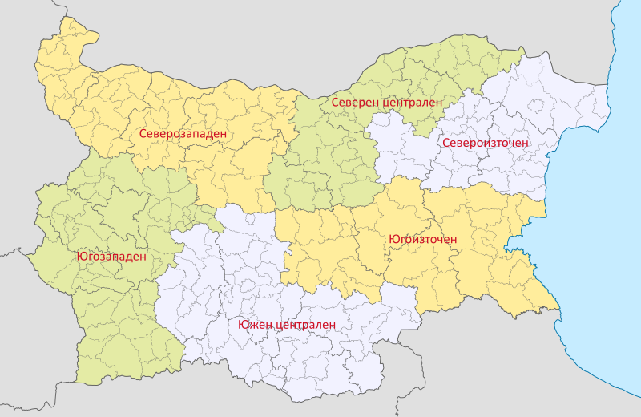

Използване на ИКТ в домакинствата
Достъп на домакинствата до интернет
- Северозападен район – 70.8%
- Северен централен район – 73.2%
- Североизточен район – 74.0%
- Югоизточен район – 74.7%
- Югозападен район – 77.8%
- Южен централен район – 75.3%

Е-умения на лицата между 16 и 74 години
Използване на мобилни устройства от лицата за достъп до Интернет
Източник: https://www.nsi.bg/
 Нагоре
Нагоре